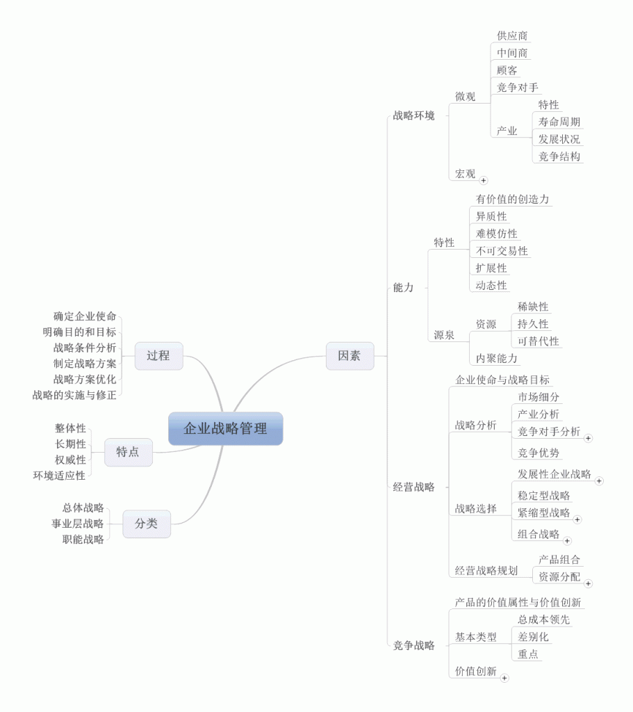
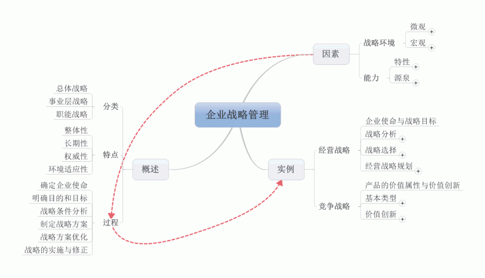

随着自考的临近，对于时间的分配也大部分倾向到了这部分，就来说说对于网络经济与企业管理的学习吧！这本书刚开始接触真的是很头疼，内容太多太乱，但这时也就体现到MindManager的重要了，每一章的总结让我们对于这本书的理解更加深刻，当然这不是重点，今天我主要说的是反复。
先来看看两张图：

第一张图只是简单的罗列，当然这样也不错，一看到图就可以让我们对这一章主要讲的内容有一个大概的了解，但是这时我们找不到各部分间的关系，也就不能在我们的头脑中织成网，这时就需要我们对我们画的内容进行思考，深入挖掘出它们之间的关系，对书中讲的内容再分析，直到将我们学到的内容逻辑清晰的表达出来。简单明了，逻辑清晰的图才会让我们有再学习的欲望，不断的反复，不断的总结才会让我们不断进步。